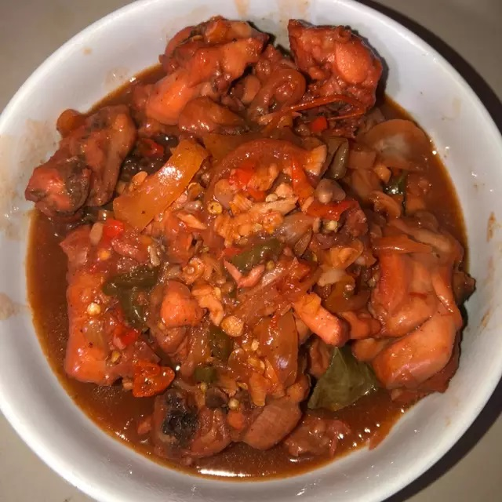

Ayam Saos Tiram
Bahan-bahan
4 potong paha ayam
1 buah bawang bombay
6 siung bawang putih
5 bawang merah
1 buah cabai lombok
5 buah cabai rawit
3 buah cabai kriting
Secukupnya minyak goreng
Secukupnya air putih
Peyedap
1 sdt garam
2 skm saos tomat
3 sachet saos tiram
1 skm minyak ikan
Langkah
- Potong semua bamer, baput, bawang bombay, cabai, Sisihkan.
- Potong ayam menjadi beberapa bagian, sisishkan.
- Panaskan minyak goreng.
- Goreng terlebih dulu ayam yg sudah di potong, lalu tiriskan.
- Goreng semua bumbu yang di potong tadi, tunggu sampai setengah kering
- Tambahkan semua bumbu penyedap
- Masukkan ayam yg sudah digoreng ke bumbu, masukkan secukupnya air. Tunggu sampai airnya meresap
- Ayam saos tiram siap disajikan..